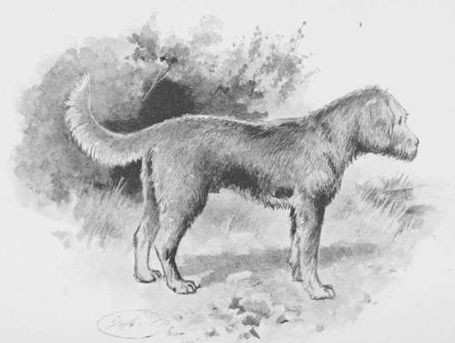

Chapter XIII. Otter-Hunting
Description
This section is from the book "Hunting: A Manual of Fox, Hare, Stag & Otter Hunting", by J. Otho Paget. Also available from Amazon: Hunting: A Manual of Fox, Hare, Stag & Otter Hunting.
Chapter XIII. Otter-Hunting
The greatest charm in this sport is the wildness and shyness of the otter. There is hardly a stream of any size in England in which he is not found, but unless hunted he is very seldom seen, and in consequence he is often close at hand without any one being aware of it. In the daytime he lies secure, coiled up in the centre of a hollow willow or on the ledge of a drain that perhaps has its mouth under water. At night he starts off on his fishing excursions, gliding silently into the water without disturbing a ripple on the surface, and by sunrise next morning he may be resting himself at some other refuge in the next county. He is here to-day, gone to-morrow, and unless it be a bitch with cubs, no man can say where an otter is certain of being found.
In the hottest months of spring and autumn, when every other form of hunting is at an end, the pursuit of the otter is at its height. Both men and hounds can stand the constant immersions better in warm weather, and the only hardship then is that of early rising. There is a fascination in itself merely watching hounds work a stream, and even when they find nothing you feel yourself well repaid for turning out at daybreak. You are expecting hounds to hit a drag every minute, and who shall say that in the expectation is not more than half the pleasure ? The ideal stream for an otter is a rippling brook or river, full of deeps and shallows, with overhanging banks that will conceal the entrance to his underground home. Here he wanders through the night for many miles, sometimes surprising a fat trout or eel, and then, taking a turn on land, will vary his repast with a succulent frog. As daylight approaches he hurries on to some well-known holt in which he has ofttimes rested before, and of the locality of which he has a perfect recollection. He is the gypsy of the water, a wanderer without either house or home; but, like all rovers, he spends a happy life, and unless some river-keeper is watching the banks with a gun, he has little to fear from any except his legitimate enemies. His powerful jaw makes him a formidable opponent for any dog to tackle single-handed, and his tough jacket is not easily torn.
Nearly all packs of otter-hounds have a large proportion of foxhound blood mixed up with other breeds, and there are generally several who began life by hunting the fox, but have been drafted for age or other causes. These very soon enter, and are the keenest in driving an otter to his death.
The objection to putting in a young foxhound is that he is in rather too much of a hurry, has too much drive, and, when there is a good scent, he leads the hunt at such a pace that you very soon get left behind. The foxhound of seven or eight seasons has still plenty of good work left in him, and he will be as stout as ever, but age will have made him slow, and he will soon find that at this new game he will be as good as the young, whereas of late in the other sport he had been obliged to take a back seat.
A pure Otter-Hound
There is no more sensible animal than the foxhound—he loves every kind of sport, and will quickly adapt himself to altered circumstances. He takes readily to the water, and when once entered to the otter he can generally be depended on not to throw his tongue on the scent of a rat or waterhen. If he happens to cross the line of his old enemy the fox, he sometimes forgets himself, and there is always this danger to be thought of when an otter going from one stream to another enters a wood or covert. There are few packs that have not a strain of foxhound blood, and most masters like to have at least two or three couple to mix with the others.
The pure-bred otter-hound is generally of a tan colour, varying from light to dark, and occasionally showing patches of white, but when this occurs I think it is evidence of a cross at some period. He has a rough wiry coat, and the harder the texture of his hair, the better he will be able to withstand the effects of being continually in the water. He has a deep voice with a bell-like tone, which makes one think it probable that he and the bloodhound had a common ancestor.
The otter-hound was formerly about sixteen inches and not very straight on the leg, but of great strength and endurance. In the last fifty years the standard has been raised gradually, and now there are few under twenty inches. The tall hound has this advantage, that except in deep pools he can wade whilst the smaller sort are swimming, and it is the swimming which tires them out. Were it not for this reason I think I should prefer a pack of strong sixteen-inch hounds, as you would then be able to keep up easily on foot.
I hope the pure otter-hound will not be allowed to disappear and become merged in a cross : it is doubtful what such a cross, however successful it might be at first, would eventually produce. There are many good qualities in the old otterhound mixed up with not a few vices; but if breeders would give their attention to this material, with care and judicious selection they might in a few generations raise up a hound that would be far more satisfactory than any cross.
The greatest difficulty in breeding otter-hounds is that the time they are wanted for hunting is the time when the bitch would be suckling her puppies. Of course, if you can get them to whelp about January the pups will be weaned before hunting commences, but unfortunately this cannot often be managed. Few masters can spare their best bitches and those that are most reliable, which are the ones that should be bred from.
It is very important that the pack should be in good condition and have their feet thoroughly hardened. Being continually in the water and scrambling over sharp rocks tries their feet very severely, so that unless this has been attended to you will have lame hounds all the summer. Plenty of horse exercise on the roads for three months previous to the commencement of the season will put their feet right and lay on the muscle which will be wanted for continual swimming. The master who thinks, because otterhounds are not required to do fast work, that it is unnecessary to give them a lengthy preparation, will have very indifferent sport.
Continue to: